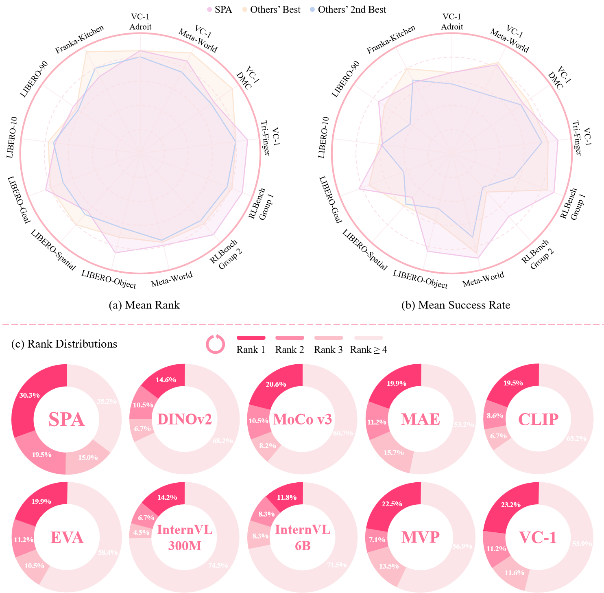
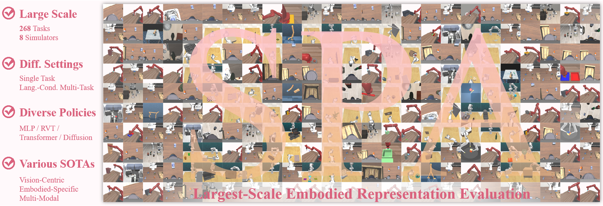
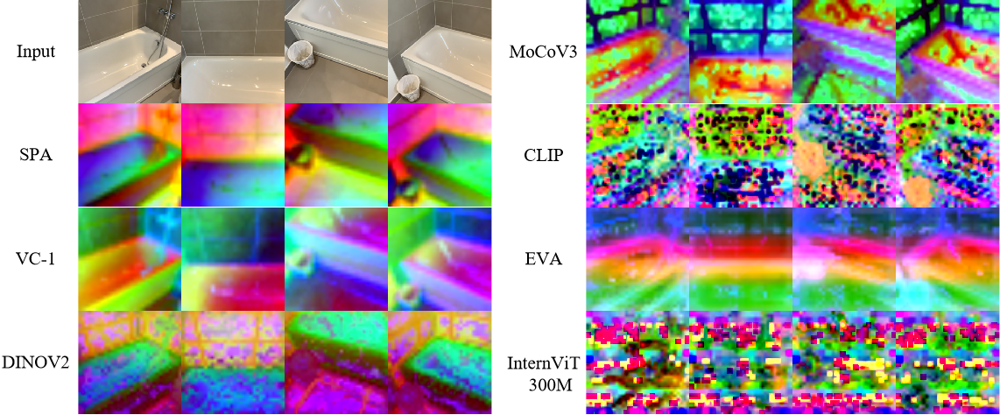
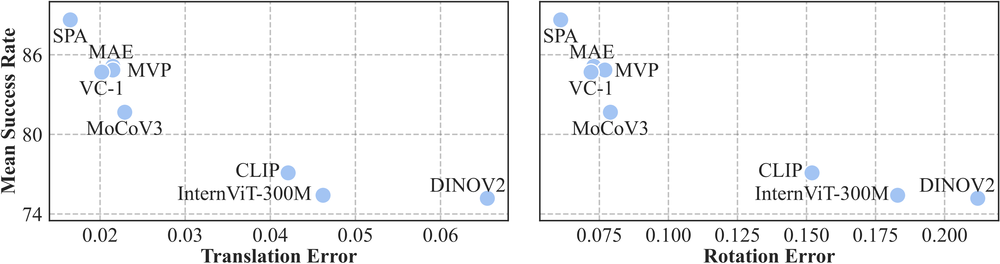

In this paper, we introduce SPA, a novel representation learning framework that emphasizes the importance of 3D spatial awareness in embodied AI. Our approach leverages differentiable neural rendering on multi-view images to endow a vanilla Vision Transformer (ViT) with intrinsic spatial understanding. We present the most comprehensive evaluation of embodied representation learning to date, covering 268 tasks across 8 simulators with diverse policies in both single-task and language-conditioned multi-task scenarios. The results are compelling: SPA consistently outperforms more than 10 state-of-the-art representation methods, including those specifically designed for embodied AI, vision-centric tasks, and multi-modal applications, while using less training data. Furthermore, we conduct a series of real-world experiments to confirm its effectiveness in practical scenarios. These results highlight the critical role of 3D spatial awareness for embodied representation learning. Our strongest model takes more than 6000 GPU hours to train and we are committed to open-sourcing all code and model weights to foster future research in embodied representation learning.
Given a set of multi-view images as input, we first mask out them and use a ViT with an upsampler to extract feature maps. Subsequently, we construct an explicit feature volume from these multi-view features. Finally, RGB-D images and feature maps are rendered from the feature volume for loss computation.
We conduct the largest-scale evaluation of embodied representation learning to date. Our study encompasses 268 tasks across 8 simulators, including both single-task and language-conditioned multi-task settings. We evaluate diverse policy architectures and assess various state-of-the-art representation methods. This thorough evaluation allows us to provide a comprehensive and unbiased analysis of different representations.
For qualitative analysis, we visualize the zero-shot feature maps on multiview images of different encoder output. The features produced by SPA are cleaner and more coherent, demonstrating its 3D awareness.
For quantitative analysis, we evaluate the zero-shot 3D awareness of various methods using a camera pose estimation task. We identify a clear positive correlation between camera pose estimation and embodied evaluation performance.
We conduct 3 real-world experiments: picking cube, stacking cube and folding cloth. The pre-trained SPA representation serves as a powerful frozen encoder, surpassing previous SOTA representation learning methods.
@article{zhu2024spa,
title = {SPA: 3D Spatial-Awareness Enables Effective Embodied Representation},
author = {Zhu, Haoyi and and Yang, Honghui and Wang, Yating and Yang, Jiange and Wang, Limin and He, Tong},
journal = {arXiv preprint arxiv:2410.08208},
year = {2024},
}